android launcher · version 1.67 · user guide
Phosphor
Your Android home screen as a retro terminal. Every part of the screen is drawn with text characters on a glowing CRT style display: a big pixel clock, live weather, system gauges, your notifications, cliamp radio and your apps, all on one grid.
Ten whole looks in one tap, from calm camel and navy or cream and forest to green screen and neon dusk, each with its own painted wallpaper.
This is the guide and the place to report bugs and ask for features. The app itself is on Google Play.
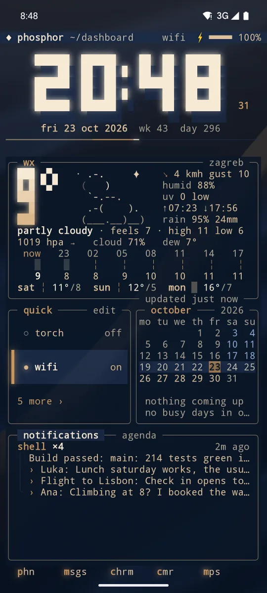
- 10whole looks, one tap each
- 15colour themes, light ones too
- 23moving backgrounds
- 10pages you swipe between
- 20tools, each a page or a panel, 8 more with pro
- 0ads, accounts or analytics
ten looks
Each preset is a whole look in one tap: theme, picture, wallpaper, crt, weather style and day and night. Your pages, panels, text size and phone wallpaper stay as they are. my own look brings back the look you had before the first preset. Six are free; the four built on a pro theme carry a pro tag.
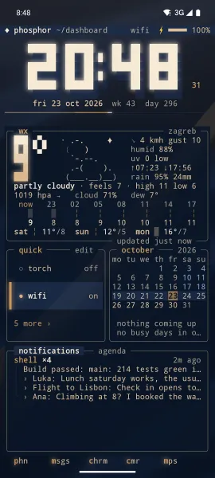
camel and navya camel scarf on navy satin 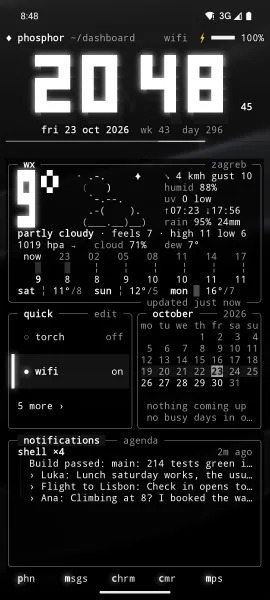
classy black · problack glass on black silk 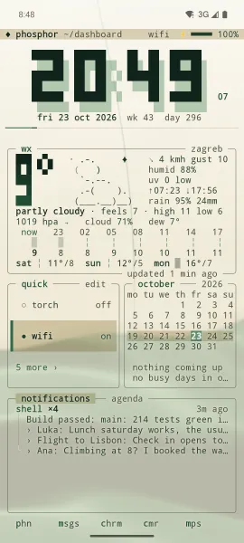
cream and forestforest ink on cream paper 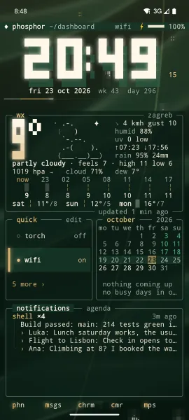
evergreencream on forest, fireflies 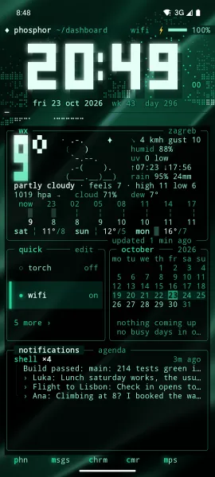
emerald · projade glass, emerald satin 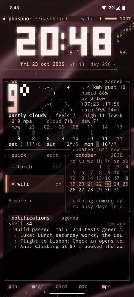
rose · prorose gold, falling petals 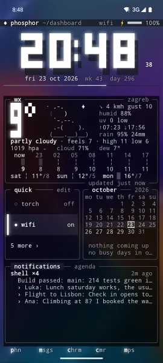
liquid glasssmoked glass, flowing colour 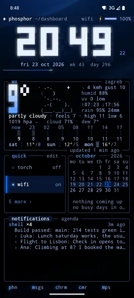
housetrue black, one blue light 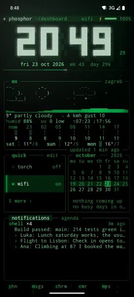
green screengreen phosphor, matrix rain 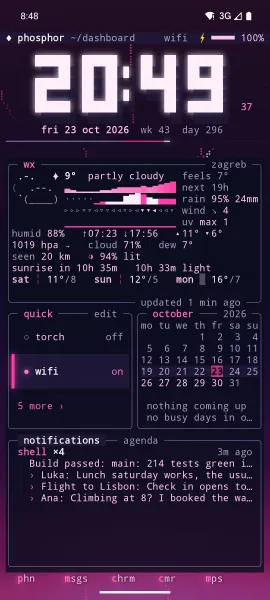
neon dusk · propink neon dusk at warp speed
crt tubes
Glass is free. Amber, green, vhs and curved come with phosphor pro. Amber and green glow in one colour under a gently curved glass, curved keeps your own colours under that glass, and vhs is a rolling tape.
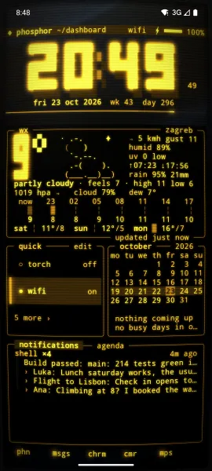
amberpro 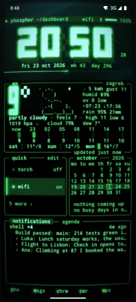
greenpro 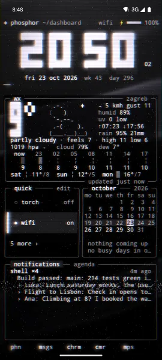
vhspro 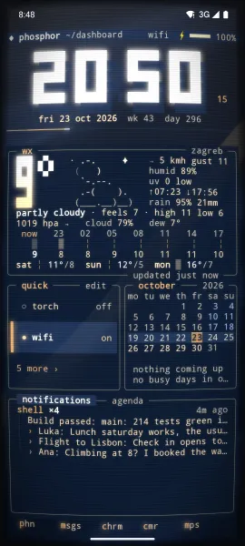
curvedpro
new since 1.37
- ten looks: whole looks in one tap, with camel and navy as the new default. Pick your look is in the setup guide.
- crt tubes: glass for everyone, and amber, green, vhs and curved with pro. The hard to read tubes are gone.
- page names: give each page a name of your own.
- lock gesture: double tap empty space to lock the phone, if you turn it on.
- pull down: opens notifications, quick settings, search or any app you pick.
- visualizer styles: mirror, bars, blocks, wave, dots, term and mono, and album art in square pixels.
- badges and buttons: notification badges on apps (count, dot or none), and buttons like mark as read and archive.
- compact app list: two columns and tighter rows, and up to 8 apps per row on the shelf.
- rotation: lock home in portrait or landscape, or let it follow the phone.
- phosphor pro: widgets, 2fa codes, news, gps, sensors, friend and more, as one optional extra.
- lighter on memory: pictures, the glass and the player's artwork no longer hold large images, and search shows each letter at once.
- glass setting gone: the home is solid, and a picture shows at the strength its preset was made for.
what you get
Everything you see is one character grid. Box lines, blocks and braille are drawn as shapes, so panels join with no gaps. The clock glows, digits glitch when they change, and a background like rain can fall through the empty cells.
- Big pixel clock with a seconds rail
- Live weather as a pixel landscape: the sun, the moon in its real phase, stars, clouds drifting with the wind, rain, snow, lightning and fog. Weather comes from Open Meteo, no account needed
- System gauges for battery, memory and disk, plus a live network chart
- Calendar agenda for your upcoming events
- Notifications with badges on your apps, quiet by default: system noise stays out, and you can hide any app with a hold
- A full screen pull down of your own: clock, battery, quick toggles, the player and your notifications
- Media controls, with the album cover softly blurred behind the player in your theme's colours
- cliamp radio built in: Lofi, Meditative, Synthwave, EDM, Chiptunes, Amiga, NCS House, Dubstep, Phonk, Chill and more
- Quick actions you choose yourself: torch, wifi, bluetooth, sound, do not disturb and more
- App drawer with fuzzy search and a letter rail, and a dock with your most used apps
- Panels that snap to a grid like Android widgets, on up to 10 pages
- A lock screen drawn in the same grid, theme and glow as home
inside the app
Pages, edit mode and the picker, from a real phone. Scroll sideways for more.
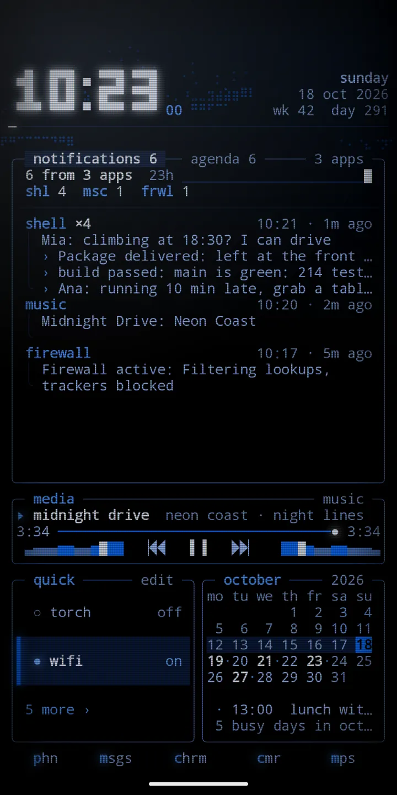
inbox: notifications first 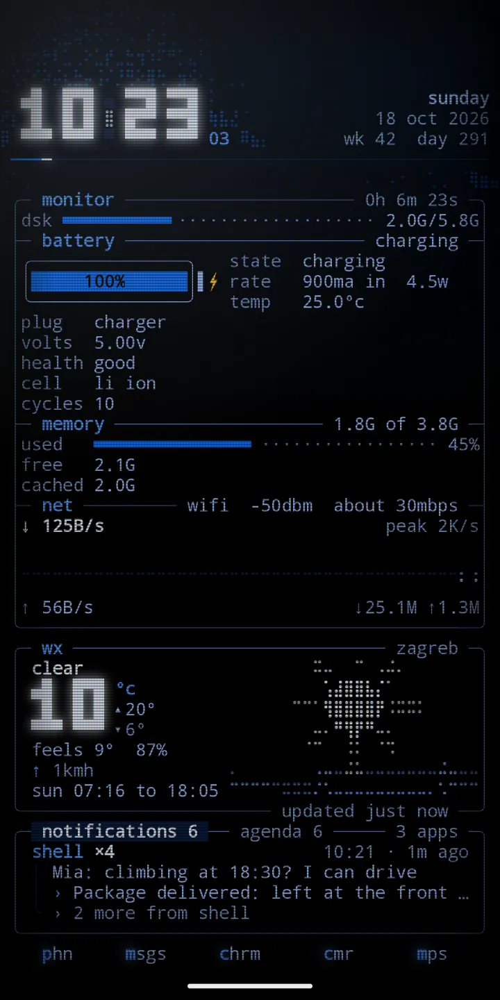
monitor: battery, memory and network 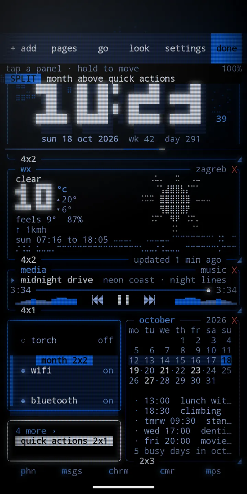
edit mode: size, move and remove panels 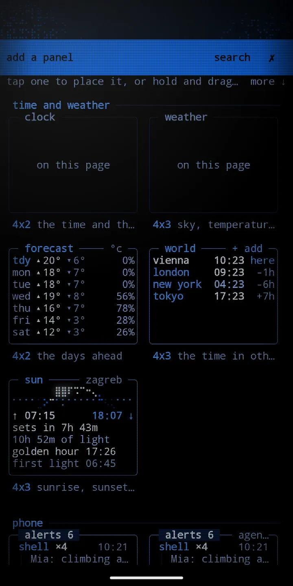
add a panel: the picker 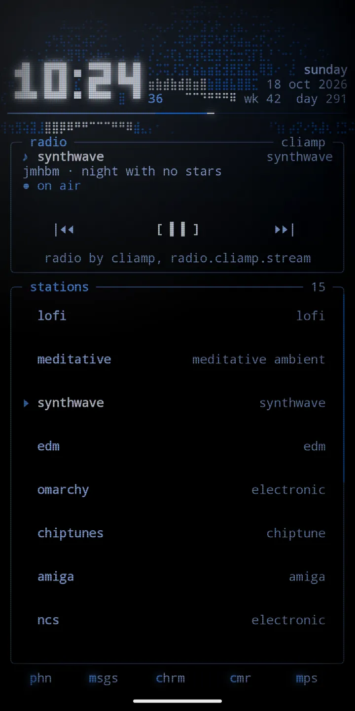
radio: cliamp stations 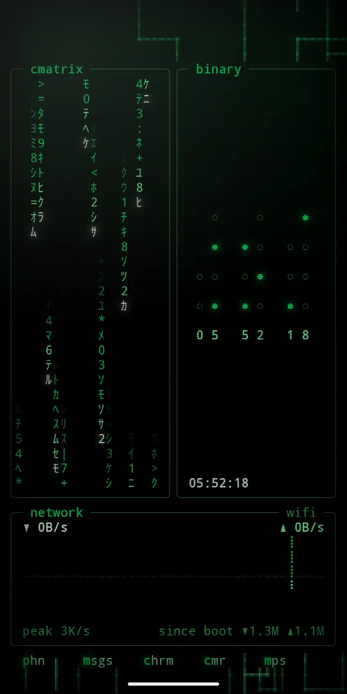
cmatrix, binary and network
phosphor pro, an optional extra
Everything above is yours with the app. For those who want more, one optional purchase in the app adds every extra, now and later, with no subscription:
- Android widgets from your other apps, drawn inside phosphor boxes on the grid, stacked if you like
- 2fa codes, kept encrypted on this phone only: scan a QR code, bring codes over from Google Authenticator, and keep a backup file sealed with a passphrase
- A text and json editor: open a file, format it, check it and walk it as a tree
- Strong passwords and passphrases, made on the phone and never saved
- A clipboard history, off until you turn it on, sealed on this phone
- Contacts in search: type a name or number to call or text
- A news reader with a ticker tape for any RSS or Atom feed
- A gps panel with your position, the sky and every satellite, and a sensors panel with a level, a compass and live traces
- Friend, a little pet with moods
- Four CRT tubes, and 14 more themes, pure black and pure white among them
Settings, phosphor pro. Restore brings pro back on a new phone. More in the guide.
quick start
- Install Phosphor from Google Play. It runs on Android 7 or newer.
- Open it. The setup guide walks you through home screen, lock screen, notifications, system lock cards, weather and calendar, and battery, then lets you pick your look.
- Take the tour. It shows each gesture on your own home and you try it.
- Swipe sideways for pages, swipe up for apps and search, pull down for what you picked.
- Hold empty space for edit mode. From there you add panels, manage pages, change the look and open settings.
- Open
look,presetsand try the ten looks.
guide
Install, gestures, pages, edit mode, panels, looks, crt, lock screen, settings, pro, battery and accessibility.
use cases
Ideas for a focus phone, a music setup, a work dashboard, a night setup, habits, a hacker look and a calm daily phone.
cookbook
Short recipes: try a look, name your pages, lock with a double tap, a pull down of your own, day and night, live weather and more.
help
Answers to common questions, fixes for common problems, and how to report a bug.